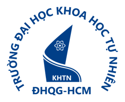

Basic Info
Name:Tran Trung Bac
Role:Oracle Database Administrator · Sacombank
Email:tranbac1128@gmail.com
Location:Ho Chi Minh City, Vietnam
Languages:Vietnamese and English
Research:Data Platforms · Data Lakehouse · Distributed Systems · LLMs
Database Administrator - Data Engineer
I'm Bac, also known as Henry — an Oracle DBA at Sacombank with a background in Mathematics & Computer Science. I work with databases and data integration, and build projects that turn raw data into useful, reliable data products.

B.Sc. Mathematics & Computer Science
Data Science specialization
Potential Intern Program 2026 · Transitioned into a full-time DBA role.
View certificate ↗From database changes to analytics-ready data.
Operational foundations and data movement.
Project experience across the data lifecycle.
Building, running, and troubleshooting.
Conference / Journal name · Publication year
A sample research concept exploring how a data lakehouse can connect environmental metrics with traceable evidence from sustainability reports.
COMAP
SIMIODE Challenge Using Differential Equations in Modeling
VNUHCM – University of Science
Statistics and Machine learning.
AIESEC in Vietnam
Data analysis and analytical skills.
Kyanon Digital
“Revolutionize the Future of Data-Driven Retail”
Checking CV availability…
Interested in data engineering, database systems, or a project collaboration? I'd love to connect.
tranbac1128@gmail.com